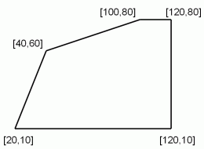

Training task
Introduction
The training task is designed to familiarize you with the Upload and evaluation system (Upload). Your solution of this problem will not be credited to your score in the subject of PAL. Solving this task is voluntary and you do not need to upload it.
The Upload launches and checks your solution mechanically, so pay attention to your exact formatting of input and output data. The system usually can not handle incorrectly formatted data and then it marks your solution as wrong regardless of its actual accuracy.
The assignment: Length of fence
Jose has recently acquired a new land property and he is preparing to rear calves of excellent Patagonia cattle on them. We see him sitting at a roughly carved table under a miserable flickering kerosene light and he is looking into the pampas maps behind the river, where they are hammered stakes defining a promising pasture. Tomorrow he will go to the city for a mesh fence, or rather, for electrical fence, because Jose is walking with the times, and he wants only the best for his livestock. Outside the window the dull moon illuminates a scanty scrub in front of the ranch, somewhere in the hillside an owl hoots and Jos� with his head propped is trying in vain to remember what they actually did in school, when they calculated the length of a fence. After a moment of fruitless rumination he decides that he draws the stakes into the map and he will take the map with him into the town and he will sort all out in the place. Joaquin, whom he is going shopping at, had always good markings in math, he knows the circumference of the globe and can caluclate even with fractions. Jose encouraged with a hope for successful business finds a pencil in the drawer and he begins with slightly tongue out to draw dots into the map in places where the stakes are droved in the fence. As a true child of nature he has an excellent memory, flawless orientation in space and a steady hand, so he can trust that the dots are drawn in the right places with a millimeter precision.
The next day, while first rays of the sun touch hardly a hopelessly cracked tower of a ancient colonial church in the city, Jose is already under a araukaria in the hardware shop yeard and he explains to Joaquin why he has come and that he does not know how many feet of fence he will need. It will be easy, says Joaqu�n, I shall proceed the map. I will measure for each dot how many millimeters it is away from the left edge of the map and how many millimeters away it is from the bottom edge of the map. So, for each dot we get something like the coordinates. They are called Cartesian, I remember it well, continues explaining to the stunned old friend. Well, yes, but what are we going to do with the coordinates, Jose would be glad to know. We will give them to Conchita, my nephew that is with us just a few days to visit us and she can do this wonderfully. She has a dog named Pythagoras, and that one can almost to handle it, too. He smiles. It will be a toy. I will write all these coordinates in the order right here on the back of this old envelope so that you could keep the map and I will add a map scale 1:5000, although I do not know if Conchita can use it, but you know, one never knows.
While business continues and it revolves around other important items of farm equipment, it is up to us to do something for Conchita. When she wakes up, she squints, sneezes finely, and gets up, she finds also a small card with a hastily drawn length fence next to the input from his uncle on the dresser. It is weighted down with a stone, so that a draft does not blow it away and Pythagoras does not devour it.
Input
The input is a text file showing the coordinates of Jos�'s stakes in millimeters regarding the map. The first row contains the number of sticks. Each following line comes with coordinates of stakes separated by a space. In fact, the stakes are given in the order in which the fence runs from one stake to the next one, so they link correctly the perimeter of fence.Output
The output is a single integer number indicating the length of the fence rounded up to meters. Thickness of the stakes is neglected in calculations. The fence is closed, so the program should also add the distance from the last to the first stake.An example:
Input:
5 20 10 120 10 120 80 100 80 40 60
Output:
1536
Upload system
The above example data is saved as a separate file in the Upload system. When you submit a solution to the Upload system, the user gets the complete output to stdout and stderr streams of the executed software applied to this file.